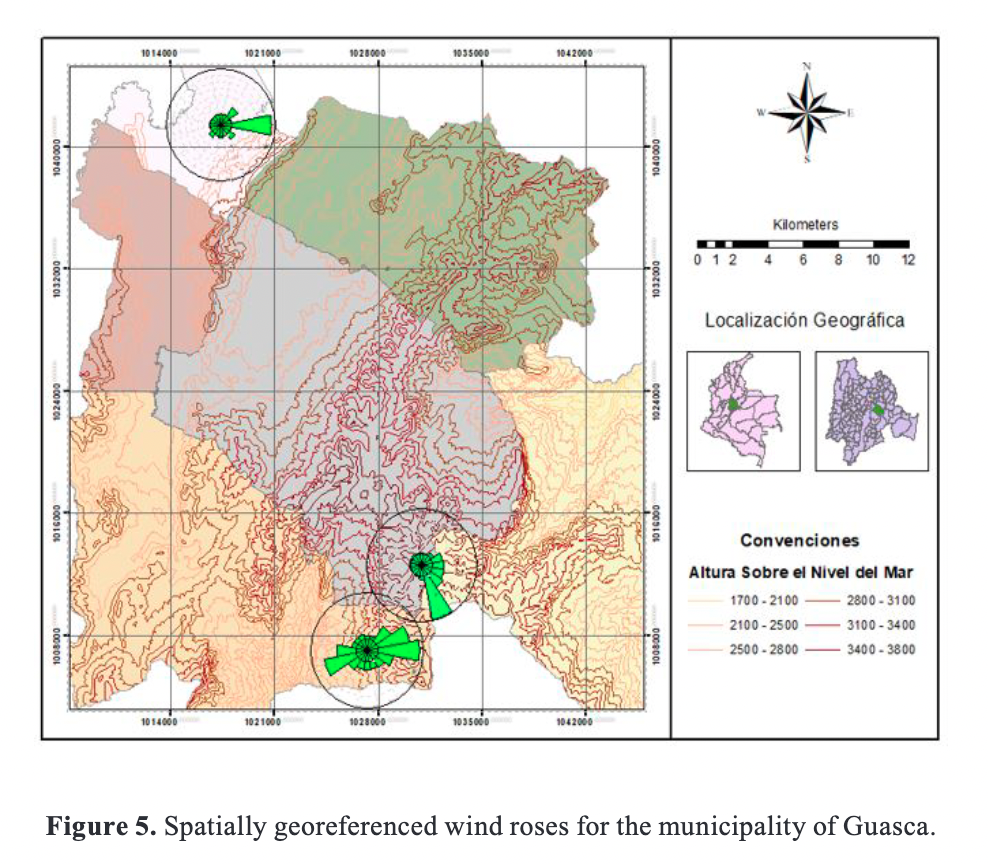

Introduction
Energy constitutes a fundamental part of human daily life and for the development of society, an immaterial and fundamental
component of the universe as well as something vital for civilization [1] [2]. Wolfgang Bauer and Gary Westfall state the importance of energy
as follows: "No physical quantity is more important in our daily life than energy". [3] For decades this growing need for energy was covered
mainly by fossil fuels such as oil, coal and natural gas, which generated social, environmental and social problems such as problems
of air pollution resulting from the waste of these fuels known as greenhouse gases. [4] [5] The international contribution of fossil fuels,
although it has decreased since in 2011 oil accounted for 40% of the energy consumed in the world, five percent less than in 2001, while coal and
natural gas accounted for 25% and 21% respectively, still maintains these energy sources as the main and most important in the world. [6] This is
in large part because various political and social actors justify the dependence on these fuels for their economic and geopolitical interests. [6]
Due to the increasing demand for energy worldwide, the growing interest in the effects of climate change, and the desire to reduce greenhouse gas
emissions, renewable energies, such as wind energy, are growing rapidly [7] Renewable energies -in this case, wind energy- as described by
the Institute of Meteorology, Hydrology, and Environmental Studies -IDEAM-, are nowadays valuable resources, cleaner than those originated
in fossil sources, these resources are increasingly competitive, especially if we take into consideration that they allow auguring a
more sustainable development on Earth. [8] Wind energy is the electrical energy obtained from the wind. i.e. from a certain point of view, wind
energy can be understood as an indirect form of solar energy since it is the heat produced by the sun that causes the air masses to move by causing
variations in pressure, wind energy varies greatly from one place to another due to the irregularities of the terrain. [9] [10] Wind power has commonly
been used to pump groundwater to the surface or to grind grain into flour, but modern wind power plants generate electricity for homes, factories, etc.
[11] To generate wind energy, it is necessary to take into account something fundamental about the wind, and that is that two data are of interest, above
all: course and speed. [12] The wind direction changes in time which are connected to the behaviour of the temporal wind flow caused by different
geographical and atmospheric factors. [13] Among these are factors such as the Coriolis force which is mainly produced by the rotation of the earth,
however, it should be clarified that this force does not generate wind but modifies the direction of the air masses; it should also be noted that in
the equatorial zone this force is null. [11] [14] It is also worth mentioning that in the equatorial zone this force is null, in this zone the trade
winds are present instead. The Coriolis force together with the influence of high-pressure zones causes the flow of these very constant currents of wind
from east to west in the equatorial zone known as the Intertropical Convergence Zone. [11] [12] The wind direction is also affected by different geographical
and atmospheric factors: the force produced by the pressure gradient increases the wind speed, which is evident in places with strong winds that in turn
evidence high-pressure gradients. [11] [12] On the other hand, friction decreases wind speed, especially during the first 1.5 km of the Earth's atmosphere;
this friction is mainly because the air masses are in constant friction with the ground and geographical accidents. [11]
In recent years, significant progress has been made in this field, proof of this is the wind energy studies conducted throughout the world such as China where
a wind potential study was conducted in Jiangsu [15] Thailand, where a wind potential study was carried out in the Hat Yai campus of the Prince of Songkla University.
[2] Multi-criteria analysis for the offshore wind potential in Egypt [16]. Kaoga et al. [17] conducted a study of wind potential in the far north of Cameroon highlighting
the geography of the region which is part of the Mandara Mountains. [17] Nawri et al. [18]carried out a study of wind potential in Iceland. [18] In the region of Baja California,
the effects of meteorologicalphenomena in the area on the wind potential of the region were studied, [19] an evaluation of the wind potential in thestate of Veracruz (Mexico)
[20] among many other studies found at the international level.
At the national level, however, there are few studies on the subject at least in a more specific way. Besides the Jepirachi wind farm, which is the only wind farm in the country to date,
[21] and a small group of wind studies relegated to the department of La Guajira and the Caribbean coast, there are few studies on the subject, at least in a more specific way.
[22][23] A study of the wind resource in Bogota [24] a statistical analysis of wind distribution in the Aburrá Valley[25]and a study of wind potential in the Chontales páramo.
[26] This shows little interest in the subject at the nationallevel, relegating research to the Caribbean coast and specific locations in urban areas, leaving aside other
locationsthat may present suitable conditions for wind power generation, therefore, this study can open a new perspective onthe field of wind energy and new points of view in
its implementation, likewise, this study can be a starting point forthe implementation of wind energy systems on a larger scale in the country, or in mountain areas similar to the study
Methodology
Study Area
The present research was conducted in the municipality of Guasca, located in the department of Cundinamarca, Guasca has an average temperature of 13 °C and is located at an
altitude of 2,800 Height above mean sea level. It is located between the cold and paramo thermal floors. [27] To the east, the town is surrounded by the Chingaza National
Natural Park, [27] [28] towards the northwest is the Tominé Reservoir. [29] Finally to the west is the Pionono hill in the neighboring municipality of Sopó.
Materials and Methods
for meteorological stations: For the present research, the search for meteorological stations that could measure wind speed and direction present in the study area or
adjacent to it was carried out, once these stations were located, the request for information was made to the entities that own them (for this case they were the Corporación Autónoma Regional
de Cundinamarca - CAR, and the Instituto de Hidrología, Meteorología y Estudios Ambientales -IDEAM) discarding according to the available information those stations that did not have enough data
to be usedin the subsequent analyses, finally obtaining the following stations (Table I):
It should be clarified that a fourth meteorological station located in the municipality of Guatavita was used which, although it does not have data on wind speed or direction, due to its history of
having recorded such data in the past and its geographical location was useful to perform the corresponding interpolation work of the subsequent analysis. In that sense, it was also considered a station
located within the study area called "Santa Cruz de Siecha", but in the end, it had to be discarded due to lack of data for the year 2019.
Quality Control of Data Obtained: For the present research, daily frequency data series corresponding to the years 2017, 2018 and 2019 were used. To obtain greater reliability of the data, an initial
quality control process was carried out, which consisted of eliminating inconsistent data from the series -for example, negative speed data-, and data whose values were three times greater
than the standard deviation obtained in the statistical description of the series were also eliminated.
Data Filling: To obtain the total reliability of the data obtained it was also necessary to perform a data filling process which consists of filling any data gaps in the series (Table II) using
mathematical methods. For this study, the Windographer program was used, which can perform data filling through a stochastic process known as Markov Chains. [31] This process can be defined as any
process in which the probability of a future event can be predicted based only on the immediately preceding events, which implies that the Markov chain and the events that compose it will show identical
behavior at any moment in time in which it is observed. [32] [33] [34]
Statistical analysis of the data: Having obtained reliability in the data we proceed to perform the corresponding statistical analysis of the data using the Weibull probability distribution.
The probability distributions are mathematical models that serve to determine the probability of occurrence or the behavior of a variable, data or series of data; In the case of wind, a variety
of probability distributions can be used to describe the properties of the wind such as direction and speed, as well as the Weibull distribution is widely considered as the probability distribution
of occurrence. [35] Likewise, the Weibull distribution is widely considered to be the most suitable probability distribution for analyzing wind speed data given the variety of curves that can result
from the use of different parameters related to this wind characteristic.[34] [25] [36] The Weibull function is characterized by two parameters: a scale parameter and a shape parameter; the scale parameter
defines how sparse the distribution is while the shape parameter defines the shape of the distribution [37]

For this study we used the statistical function of the Windographer program, which can import and analyze wind resource information from different formats and automatically detect the structure
of the same, allowing a quick quality control and statistical analysis. [31] [38]
Statistical description of the data: once the data quality control was performed, the corresponding statistical analysis was carried out, which consisted basically in obtaining the measures of
central tendency of the data series (mean, standard deviation, variance, box plot). [34] [35] [36] This was a dominion to study the behavior of the data series and to be able to have more clarity about the possible
results of the subsequent analysis.
Wind Direction Description: To develop the description of the wind direction it was not possible to use the WRPLOT program because this program only elaborates wind roses from hourly frequency
data series, therefore, being the data of this study daily frequency, we chose the special tool for wind roses of the Windographer program. [39] [40] Therefore, as the data for this study is of daily frequency, we
opted for the special tool for wind roses of the Windographer program, [31] with which the wind roses of the three stations within the study period were elaborated, which allowed determining the predominant direction
of the wind. [19] These roses plot the direction of the wind flow showing where the wind comes from, which is useful for the development of the spatial analysis of the wind roses.
Spatial and vector analysis of the wind: To carry out the energy analysis of the municipality, the Windographer program was used once again, this time a special tool was used that allows the analysis of the
power density of the data series in W/m2 as well as the classification of the wind according to the energy it can produce. [31] Once these data were obtained, we proceeded to georeference them in the coordinate system
mentioned above in the ArcGIS™ software, then the geostatistical interpolation of the energy data was performed in the same way that was done with the wind data, to obtain fields of equal energy magnitude
within the municipality which allows identifying areas of high energy density that can be used to generate energy.
Determination and selection of wind turbines: Consequently, with the energy data of the municipality, a review of the possible wind turbines capable of generating energy with the conditions present in the
municipality was carried out, taking into account the factory specifications of the turbines consulted, such as turbine start-up speed, orientation, number of blades, nominal power, etc. (Tables 3a and 3b), [10] [41], etc.
(Tables IIIa and IIIb). For practical purposes, the wind turbine catalog of Windographer [31] because in this catalog can also be found wind turbines that can be useful for this research.
Determination of estimated performance and restrictions of wind turbines: Once the review of wind turbines and energy data from the study area was done, we proceeded to evaluate the energy that can generate these wind
turbines using the Windographer program which has an application capable of performing analysis of turbine output power and net energy generated. [38] [31] Afterward, possible environmental restrictions - humidity and temperature
- that could affect the generation of energy in the municipality were evaluated.
Analysis of Results
In this section, you will find the results obtained from this research in statistical, spatial and vector matters, as well as the discussion and comparison with previous studies.
Statistical analysis of the data: To determine the degree of relationship existing between the distribution of the data and the Weibull probability function, a histogram was used to compare the velocity frequencies of the
data with the Weibull probability, as well as the statistical coefficient of determination that can take a value between zero and one, where one represents a perfect fit between the distribution of the data and the probability
function used, as can be seen in the following figure, the station Paramo Chingaza a statistical coefficient R2of 0.8052.
According to the histogram, it can be seen that the winds with the highest frequency are winds with speeds less than 4 m/s, however at a general level the distribution of the data tends to look quite similar to the Gaussian or normal
distribution, this corresponds to the information of the wind atlas of Colombia where the distribution of the wind speed data also tends to the Gaussian or normal distribution. [42] Regarding the statistical analysis,
the Weibull k shape factor for the analyzed stations was grouped and observed, identifying that the station with the highest value of this shape factor is the distribution corresponding to the PTAR Tocancipá station with a k= 5.137, followed
by the stations Páramo Chingaza and PNN Chingaza with values of k= 3.169 and k= 2.883 respectively, while about the Weibull scale factor c the highest value corresponds to the station Páramo Chingaza with a value c= 4.655 followed
by the stations PNN Chingaza and PTAR Tocancipá with values c= 1.955 and c= 1.893 respectively (Table IV), the latter indicates the potential of the study area according to Azal et al. [43] the higher the value of the factor c is, the higher the wind
potential of the site.[43]
In the study area, a relationship between the standard deviations and the maximum values registered in this set of stations can be observed, since it is observed that the highest values of standard deviation as well as maximum speed corresponding to
the Páramo Chingaza station with values of 1.406 m/s and 8.388 m/s respectively, in the same way, the lowest values of standard deviation (0.38 m/s) and maximum speed (3.071 m/s) correspond to the PTAR Tocancipá station. Regarding the frequency tables,
these allow observing together with the standard deviation data that the PNN Chingaza and PTAR Tocancipá stations present the highest stability in wind magnitude since they have a high percentage of data within the range corresponding to the mean
(79.72% and 82.47% respectively) while the Páramo Chingaza station is the most variable station since 63.01% of the data is outside the interval corresponding to the mean (Table V).
Regarding the averages of the study area (Table IV) it is observed that the station Páramo Chingaza has the highest value of all averages, with a value of 4.167 m/s compared to the values of the other two stations PNN Chingaza and PTAR Tocancipá (1.743 m/s and
1.741 m/s respectively), the value shown by the Páramo Chingaza station is similar to that shown in the Kousseri region in the extreme north of Cameroon where the wind speed values oscillate between 3.29 m/s and 4.38 m/s. [17] .
Wind Direction Description: The following is a description of the information obtained from the wind roses for each of the stations used in the study period:
Páramo Chingaza: The wind roses of this station show that the wind comes from the south-southeast direction mainly, followed by a smaller but appreciable tendency of coming from the east directly, indicating that the wind flow comes from the
southeast with direction towards the northeast of the station.
Chingaza NP: The wind roses for this station show a visibly more varied behavior than the other two stations as the wind seems to come from all directions, highlighting two main trends that show origin from both east and northwest, this may be due to the location
of the station as well as nearby elements that may alter the wind flow near it.
PTAR Tocancipá: The wind roses of this station show a constant behaviour of the wind flow which comes almost entirely from the east, which shows that the wind flow moves from the east towards the west of the station, a behaviour that could also occur to the north
of the study area.
The information obtained from the wind roses shows a quite unequal behaviour of the wind regime from one station to another, however all the stations show a common characteristic and that is that the wind flow comes mainly from the east and crosses the municipality towards
the west, as shown in the following figure.

This behaviour is similar to the observation in the wind potential study by Zamora, Lambert and Montero in Baja California, where there are also wind trends from the east to the west in the Mexicali region. [19] This behaviour can be explained at a more general level, because
being located between the tropics of Cancer and Capricorn, Colombia is subject to receive the trade winds coming from the northeast in the northern hemisphere and from the southeast in the southern hemisphere.[22][42]
Spatial and vector analysis of the wind: When performing the spatial and vector analysis of the data it is observed that the wind flow in the municipality behaves in a very similar way to that shown by the wind roses, according to the geostatistical analysis two wind
currents are observed, the first coming from the northeast through the municipality of Guatavita, and the second coming from the southeast from the Chingaza páramo, both converge in the municipality of Guasca with direction towards the west of the municipality. In the same
way it can be observed that the highest wind speeds are found towards the southern region of the municipality, which shows speeds that reach 4 m/s, similar to what Avellaneda Cusaria's study shows in the Chontales páramo, where it is shown that the average wind speed is in
the interval of 4 and 5 m/s, which is also similar to the results obtained in the study of the Chontales páramo. [26]It is also similar to the results obtained in the Hatyai campus of the Prince of Songkla University where an average wind speed of 3.86 m/s is shown. [2]
According to the Beaufort scale, the wind speeds present at the Páramo Chingaza station (4 m/s) correspond to category 3 winds, i.e. weak breezes. [42] According to the wind atlas of Colombia, winds higher than 3 m/s generally occur over the mountainous area of
the central and eastern cordilleras, which corresponds to the area of the Páramo Chingaza station. [42] This corresponds to the study area because it is located in the eastern mountain range of the country.
Wind energy analysis: The energy analysis of the municipality consisted of determining the energy density per unit area of the data obtained from the meteorological stations consulted, obtaining power density values in W/m2. These values were then analyzed geostatistically,
as shown in the following figure.
According to the previous figure, it can be observed that the Páramo Chingaza station shows the highest energetic values of all the three stations, which is positive data for the study area since it is the only station that is inside the study area. It is observed that the highest
energy supply is found towards the south of the municipality, since this region shows power density values that reach 40 W/m 2.
The above described corresponds with what is shown by the Nanjing station in Jiangsu province, China shows similar power density values [15]as well as the wind atlas of Colombia where it is explained -in a very general way- that the power density values in the Andean region of the
country oscillate between 8 W/m2and 125 W/m 2. [42] However, according to Amaya, Saavedra and Arango, the values shown by the analyzed stations (Table 6) correspond to wind power class 1 (Poor) because the power density value is below 100 W/m2 . 2[25] Likewise, according to Zhou,
Wu and Liu in their corresponding study, this value corresponds to a poor wind resource zone. [15]
Determination and selection of wind turbines: To determine if the wind conditions of the municipality are suitable to generate energy, a search for wind turbine models capable of generating energy from the capacities of the municipality was carried out, as
mentioned above in section 2.2.9. Using the Windographer program, the following graph was obtained showing the power curves that can generate some of the turbines consulted with the energy conditions shown by the Páramo Chingaza station.
As shown in the figure above, several turbines can take advantage of the wind potential of the municipality of Guasca because they can generate energy with wind speeds of less than 4 m/s, which can be translated as good performance characteristics at low wind speeds, which can be
useful for energy self-sufficiency at the residential level. [44] .
Determination of estimated performance and wind turbine constraints:The following is a description and analysis of the information obtained from the net power generation analysis, as well as the evaluation of the environmental constraints for the study area.
The estimated performance of wind turbines: When performing turbine performance analysis, it can be observed that multiple turbines can take advantage of municipal wind conditions, as shown in section 3.5. Among the analyzed turbines, the models with
the highest net average output power and net energy (Table 8) are the Endurance G-3120, Eocycle EO 25/12 and Proven 15 models, and their net power output is 4.9 kW, 2.2 kW and 2.3 kW, as shown in Table VII,
Restrictions to the performance of wind turbines: When analyzing the geographical conditions of the municipality, it was observed that the south of the study area is almost entirely within the Chingaza National Natural Park, that is, the area with the greatest energy supply
of the study area is almost entirely within a protected area, which may result in an obstacle to the possible implementation of turbines in the municipality.
Likewise, when analyzing the humidity and temperature conditions of the study area, it is observed that the municipality presents temperatures mainly between 6o C and 12o C as well as a relative humidity index that ranges between 80% and 85% in almost all the territory,
which can be a possible obstacle for energy production.
Conclusions
Based on the observations in the two statistical analyses, it can be established that the highest wind speed data are found
towards the south of the municipality of Guasca, Cundinamarca. According to what was observed in the wind roses and the
spatial analysis of the data, it is established that the wind flow in the municipality of Guasca comes mainly from the
east (both from the southeast as shown in the data of the stations Páramo Chingaza and PNN Chingaza and from
the northeast as shown in the data of the station PTAR Tocancipá) and crosses the municipality towards the west. The greatest
energy supply of the municipality of Guasca is located towards the southern region of the municipality, which makes it suitable
for small-scale energy generation, in aspects such as energy self-sufficiency at the residential level. However, the analysis
of environmental restrictions shows that the southern area of the municipality of Guasca is almost completely within the
territory of the Chingaza National Natural Park, which is an important obstacle for the possible future implementation of wind energy systems.
In any case, it should be noted that the existence of other stations in the municipality of Guasca that had to be
discarded either because of lack of data or because they did not measure wind speed and direction data indicates that a more detailed study
in this municipality or neighboring municipalities could obtain more promising data than the present study for the implementation of wind energy systems in the region.
Acknowledgment
I am very grateful to my mother, Mercedes Rodriguez Prito, who is the best woman in the world and the North Star that illuminates my way forward; this work and this document
are dedicated to her.
Referencias
[1] J. C. Vega de Kuyper y S. Ramírez Morales, Fuentes de energía, renovables y no renovables: aplicaciones,
Bogotá D.C.: Alfaomega, 2014.
[2] S. Luankaeo y Y. Tirawanichakul, «Assessment of Wind Energy Potential in Prince of Songkla University
(South Part of Thailand): Hatyai Campus,» Energy Procedia, vol. 138, pp. 704-709, 2017.
[3] W. Bauer y G. Westfall , Física para Ingeniería y Ciencias, México: McGraw Hill, 2014.
[4] D. E. Enger y B. Smith, Ciencia Ambiental: Un Estudio de Interrelaciones, México D.F.: McGraw Hill, 2006.
[5] J. González Velasco, Energías Renovables, Barcelona: Reverté, 2012.
[6] M. Le Calvez, «La Dependencia del Petróleo: ¿obstáculo o estímulo para un cambio de matriz
energética?,» Energía y Ambiente, nº 8, pp. 4-5, 2011.
[7] Ritter, Shen, López, Odening y Deckert, «A new approach to assess wind energy potential,» de The 7th
International Conference on Applied Energy – ICAE2015, Berlin, 2015.
[8] IDEAM, «Viento y Energía Eólica,» 2014. [En línea]. Available:
http://www.ideam.gov.co/web/tiempo-y-clima/viento-energia-eolica
[9] M. Villarubia López, Ingeniería de la Energía Eólica, Barcelona: Alfaomega, 2013.
[10] R. Ehrlich, Renewable Energy: A First Course, Boca Raton: CRC Press Taylor & Francis Group, 2013.
[11] F. Lutgens y E. Tarbuck, The Atmosphere: An Introduction to Meteorology, Estados Unidos: Pearson, 2016.
[12] A. Gil Olcina y J. Olcina Cantos, Climatología General, Barcelona: Ariel S.A., 1997.
[13] A. Bekbaev, G. Nabyeva, A. Kassymbekova y A. Karbozova, «Wind electric unit of a new type,» de
4th WORLD CONFERENCE ON EDUCATIONAL TECHNOLOGY RESEARCHES, WCETR-, Almaty, 2015.
[14] I. Zúñiga y E. Crespo, Meteorología y Climatología, Madrid: Universidad Nacional de Educación a Distancia, 2015.
[15] Y. Zhou, W. X. Wu y G. X. Liu, «Assessment of Onshore Wind Energy Resource and Wind-Generated
Electricity Potential in Jiangsu, China,» Energy Procedia, vol. 5, pp. 418-422, 2011.
[16] M. Mahdy y A. S. Bahaj, «Multi criteria decision analysis for offshore wind energy potential in
Egypt,» Renewable Energy, vol. 118, pp. 278-289, 2017.
[17] D. Kaoga Kidmo, K. Deli, D. Raidandi y S. Doka Yamigno, «Wind energy for electricity generation
in the far north region of Cameroon,» Energy Procedia, vol. 93, pp. 66-73, 2016.
[18] N. Nawri, G. N. Petersen, H. Bjornsson, A. N. Hahmann, K. Jónasson, C. Bay Hasager
y N.-E. Clausen, «The wind energy potential of Iceland,» Renewable Energy, vol. 69, pp. 290-299, 18 4 2014.
[19] M. Zamora, A. Lambert y G. Montero, «Effect of some meteorological phenomena on the wind
potential of Baja California,» Energy Procedia, vol. 57, pp. 1327-1336, 2014.
[20] Q. Hernandez Escobedo, F. Espinosa Arenal, R. Saldaña Flores y C. Rivera Blanco,
«EVALUACIÓN DEL POTENCIAL EÓLICO PARA LA GENERACIÓN DE ENERGÍA ELÉCTRICA EN EL ESTADO DE VERACRUZ, MÉXICO,»
Dyna, vol. 79, nº 171, pp. 215-221, 2012.
[21] EPM, «Parque Eólico Jeipírachi,» 2013. [En línea]. Available:
https://www.epm.com.co/site/home/institucional/nuestras-plantas/energia/parque-eolico.
[22] G. Carvajal Romo, M. Valderrama Mendoza, D. Rodríguez Urrego y L. Rodríguez Urrego,
«Assessment of solar and wind energy potential in La Guajira, Colombia: Current status,
and future prospects,» Sustainable Energy Technologies and Assessments, vol. 36, pp. 1-15, 2019.
[23] J. G. Rueda Bayona, A. Guzmán y J. J. Cabello Eras, «Wind and power density data
of strategic offshore locations in the Colombian Caribbean coast,» Data in Brief, vol. 27, 2019.
[24] M. P. Burgos Gutiérrez, S. Aldana Ávila y D. J. Rodríguez Patarroyo, «Análisis del recurso energético
eólico para la ciudad de Bogotá DC para los meses de diciembre y enero, Colombia,»
AVANCES Investigación en Ingeniería, vol. 12, 2015.
[25] P. A. Amaya, A. Saavedra y E. Arango, «A Statistical Analysis of Wind Distribution Models In The Aburrá Valley,
Colombia,» CT&F - Ciencia, Tecnología y Futuro, vol. 5, nº 5, pp. 121-136, 2014.
[26] A. Avellaneda Cusaria y J. Varila Quiroga, «Estudio del potencial de generación de energía eólica en la zona del
páramo de Chontales, municipios de Paipa y Sotaquirá, departamento de Boyacá a 3534 m.s.n.m,» AVANCES Investigación en
Ingeniería, vol. 10, nº 2, pp. 18-26, 2013.
[27] Alcaldía Municipal de Guasca Cundinamarca, «Historia de Guasca,» 28 05 2018. [En línea].
Available:
http://www.guasca-cundinamarca.gov.co/municipio/historia-de-guasca.
[28] Parques Nacionales Naturales de Colombia, «Parque Nacional Natural Chingaza,» 23 10 2020.
[En línea]. Available: https://www.parquesnacionales.gov.co/portal/es/ecoturismo/region-amazonia-y-orinoquia/parque-nacional-natural-chingaza/.
[29] Grupo Energía Bogotá, «Embalse de Tominé,» [En línea]. Available:
https://www.grupoenergiabogota.com/eeb/index.php/sostenibilidad/gestion-sostenible/embalse-de-tomine. [Último acceso: 24 10 2020].
[30] Alcaldía de Sopó, «PARQUE ECOLÓGICO PIONONO,» 24 10 2020. [En línea]. Available:
http://www.sopo-cundinamarca.gov.co/MiMunicipio/Paginas/Parque-Ecologico-Pionono.aspx.
[31] UL, «Windographer,» 2020. [En línea]. Available:
https://store.ul-renewables.com/products/Windographer.[Último acceso: 21 10 2020].
[32] R. Spicar y M. Januska, «Use of Monte Carlo Modified Markov Chains in Capacity Planning,» Procedia Engineering, vol. 100, pp. 953-959, 2015.
[33] A. Carpinone, M. Giorgio, R. Langella y A. Testa, «Markov chain modeling for very-short-term wind power forecasting,» Electric
Power Systems Research, vol. 122, pp. 152-158, 2015.
[34] D. Wilks, Statistical Methods In the Atmospheric Sciences, San Diego: ElSevier, 2006.
[35] R. Walpole, R. Myers, S. Myers y K. Ye, Probabilidad y Estadística para Ingeniería y Ciencias, México: Pearson, 2007.
[36] D. Montgomery y G. Runger, Probabilidad y Estadística aplicadas a la Ingeniería, México: Limusa Wiley, 2012.
[37] J. C. Serrano Rico, «Comparación de métodos para determinar los parámetros de Weibull para la generación de energía eólica,»
Scientia Et Technica, vol. 18, nº 2, pp. 315-320, 2013.
[38] I. Caglayan, I. Tikiz, A. C. Turkmen, C. Celik y G. (. Soyhan, «Analysis of wind energy potential; A case study of Kocaeli University campus,»
Fuel, vol. 253, pp. 1333-1341, 2019.
[39] J. L. Thé, C. L. Thé y M. A. Johnson, «WRPlot View User Guide,» 11 11 2016. [En línea]. Available:
https://www.weblakes.com/products/wrplot/resources/lakes_wrplot_view_user_guide.pdf. [Último acceso: 21 10 2020].
[40] L. Rosenshein Benett y J. Calkins, «Spatial Analysis and Data Science,» 7 9 2016. [En línea]. Available:
https://www.esri.com/library/books/the-language-of-spatial-analysis.pdf. [Último acceso: 2 11 2020].
[41] D. L. Steeby, Alternative Energy: Sources And Systems", Nueva York: Delmar Cengage Learning, 2012.
[42] J. F. Ruíz Murcia, J. Serna Cuenca y H. J. Zapata Lesmes, «IDEAM,» 2018. [En línea]. Available:
http://documentacion.ideam.gov.co/openbiblio/bvirtual/023776/VIENTO.pdf. [Último acceso: 11 1 2021].
[43] A. K. Azad, M. G. Rasul, M. M. Alam, S. M. Ameer Uddin y S. Kumar Mondal, «Analysis of Wind Energy Conversion
System Using Weibull Distribution,» Procedia Engineering, vol. 90, pp. 725-732, 2014.
[44] F. León Vargas, M. García Jaramillo y E. Krejci, «Pre-feasibility of wind and solar systems for
residential self-sufficiency in four urban locations of Colombia: Implication of new incentives included in Law 1715,»
Renewable Energy, vol. 130, pp. 1082-1091, 2019.

 Estudiante de ingenieria,
dubane-gantivar@unilibre.edu.co .
Estudiante de ingenieria,
dubane-gantivar@unilibre.edu.co .  ORCID:
0000-0001-9695-9918.
Universidad Libre sede El bosque, Bogotá, Colombia.
ORCID:
0000-0001-9695-9918.
Universidad Libre sede El bosque, Bogotá, Colombia.